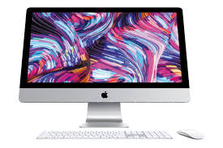

APPLE MAC
Macintosh or Mac is a range of personal computers, designed, developed and sold by Apple. First Macintosh was launched on 24 January 1984 it was the first commercial success for a computer mouse and a graphical user interface.
Mac Pro

- Designed for true experts, the Apple Mac Pro is a top of the range personal computer that combines powerful hardware with a flexible modular configuration to provide stunning performance for content creation and similar demanding applications.
iMac

- The iMac is a desktop computer product line manufactured and marketed by Apple Inc. The iMac fuses the functions of the computer monitor and the computer itself into one indivisible unit, where the display backs the CPU and associated electronics, and right down to the base that completes and supports both units. It is produced in various sizes for the consumer and business markets, characterised by powerful performance, ease of use, and clear and colourful displays. The iMac has been a popular choice among consumers and professional users for general computing use such as web-browsing, productivity, creative work, and multimedia viewing.
MacBook Pro

- The Apple Inc product line of high-performance laptops. Apple’s MacBook Pro line is famed for its razor-thin design, aluminium construction, powerful hardware and Retina displays. These machines are used by professionals and enthusiasts for various activities, such as content creation, software development and multimedia editing.